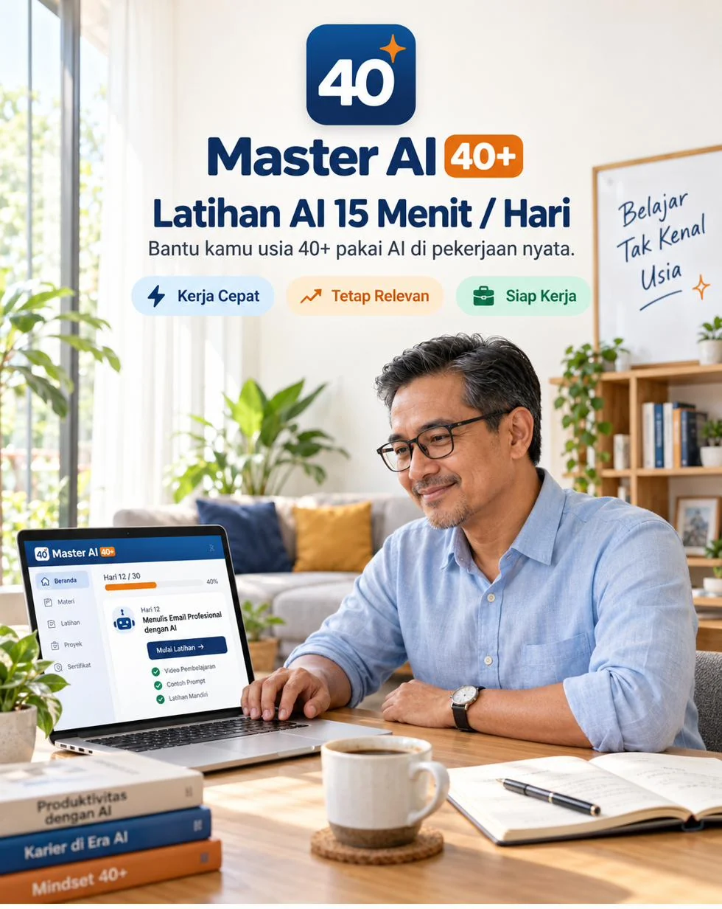
Master AI 40+ adalah aplikasi di HP: 30 hari, 15 menit sehari, satu tool AI per hari, seluruhnya berbahasa Indonesia. Yang kamu latih hari ini langsung bisa dipakai di kerjaan besok pagi.
Sekali bayar. Tanpa langganan. Buka dari browser HP atau laptop, tanpa install.
“Kok bisa 4 jam?”
Rapat Senin pagi. Rekan kerja yang umurnya 25 presentasi rekap penjualan 5 cabang, rapi, ada grafiknya. Dia bilang ngerjainnya 4 jam. Pekerjaan yang sama, kamu biasanya 3 hari. Atasan yang umurnya di bawah kamu nengok ke arahmu sambil senyum. Kamu balas senyum. Di dalam, kamu mikir: saya kalah sama anak kemarin sore.
“Usia maksimal 35 tahun.”
Lamaran ke-30 sejak surat efisiensi itu. Kamu buka lowongannya, posisinya pas, pengalamanmu lebih dari cukup. Lalu baris itu lagi. Dua puluh tahun kerja berhenti di satu baris syarat. Kamu tutup HP, dan besoknya buka lagi lowongan yang lain, dengan perasaan yang sama.
“Ya ampun, gaptek banget sih.”
Kamu minta tolong anak nunjukin cara pakai ChatGPT. Dia buka, ngetik cepat dalam bahasa Inggris, selesai, HP dikembalikan. Kamu tanya lagi satu hal, dia menghela napas. Besoknya kamu coba sendiri, contoh prompt-nya bahasa Inggris semua, dan aplikasinya kamu hapus.
Tiga adegan ini kelihatan beda. Akarnya satu. Dan bukan umurmu.
Coba ingat semua cara yang pernah kamu coba. Tutorial YouTube yang loncat dari satu tool ke tool lain tanpa urutan. Contoh prompt yang semuanya bahasa Inggris. Istilah yang nggak pernah dijelaskan: token, prompt, agen, LLM. Kelas yang janjinya income ratusan juta. Dan anak sendiri yang nggak sabar.
Semuanya dibuat untuk orang yang belajar dengan cara anak muda: cepat, loncat-loncat, dan asumsinya kamu sudah paham istilahnya. Nggak ada yang dibuat untuk orang yang punya pekerjaan besok pagi, 15 menit waktu luang, dan ingin belajar pelan tapi nempel.
Master AI 40+ dibuat dari sisi sebaliknya. Namanya Rute 30 Hari “1 Hari 1 Tool”, dan isinya empat hal:
Hari ini ChatGPT, besok Gemini, lusa rumus Excel. Bukan 20 tool sekaligus. Satu layar, satu langkah, 15 menit.
Setiap prompt sudah jadi. Kamu cuma mengganti bagian dalam [kurung] dengan isi pekerjaanmu, lalu salin.
Admin, keuangan, HR, sales, operasional, guru, atau usaha rumahan. Contoh dan tugasnya ikut bidang yang kamu pilih, bukan contoh umum.
Setiap tugas yang kamu selesaikan disimpan. Di hari 28 sampai 30, semuanya dirakit jadi sesuatu yang bisa ditunjukkan ke atasan, HRD, atau klien pertama.
Pengalaman 20 tahunmu bukan beban di sini. Itu bahan baku prompt-nya.
AI yang dipakai anak umur 25 nggak tahu cara kerja kantormu. Kamu tahu.
Enam pertanyaan: situasimu sekarang (masih bekerja, baru kena efisiensi, di rumah, atau menjelang pensiun), tujuan 3 bulan ke depan, bidang kerja, pakai HP saja atau ada laptop, dan sudah pernah coba AI atau belum.
Dari sini aplikasi menyusun Rute 30 Hari-mu: jalur yang disarankan, contoh kasus sesuai bidangmu, dan penanda hari mana yang lebih nyaman dikerjakan di laptop.
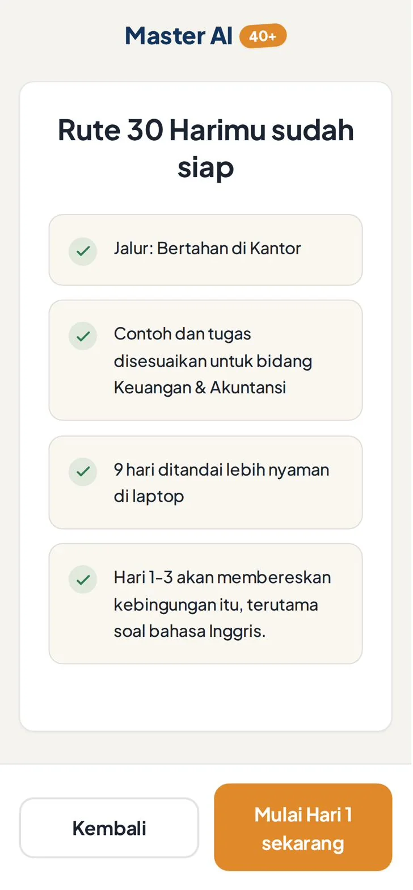
Latihan hari ini sudah ada di layar pertama: kenapa tool ini penting untukmu, langkah bergambar satu per layar, prompt siap pakai, dan tugas 10 menit.
Kalau ada langkah yang biasanya bikin takut salah klik, ada label hijau “Aman, tidak ada yang rusak”.
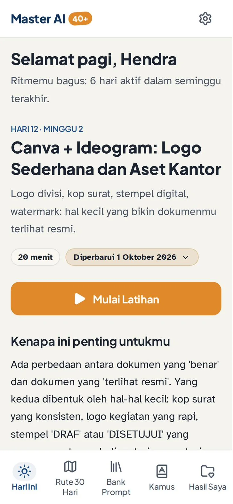
Hasil tugasmu masuk ke Hasil Saya. Hari bolong nggak mengulang dari nol. Dan di hari 28 sampai 30, sesuai jalurmu, semua hasil itu dirakit: laporan sebelum dan sesudah untuk atasan, CV dan surat lamaran, atau portofolio untuk klien pertama.
Latihan Harian
Setiap hari dibuka dengan satu paragraf: kenapa tool ini penting untuk pekerjaanmu, pakai kasus kantor, bukan teori. Lalu 4 sampai 7 langkah bergambar, satu langkah per layar, dengan tombol Buka Tool yang langsung ke versi gratisnya.
Tiga prompt siap pakai dengan tombol salin. Tugas 10 menit yang hasilnya nyata: email terkirim, rumus jadi, slide selesai.
Dan bagian “Kalau ada kendala” untuk kejadian yang paling sering: tombolnya nggak ketemu, diminta bayar, hasilnya bahasa Inggris, HP-nya lambat.
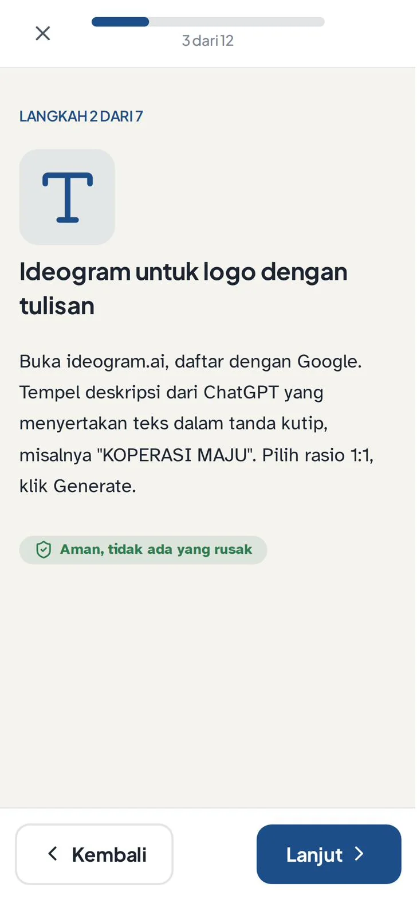
Bank Prompt dan Racik Prompt
601 prompt berbahasa Indonesia dalam 14 kategori: email dan pesan kerja, riset dan ringkas dokumen, Excel dan data, rapat dan notulen, dokumen dan presentasi, desain, suara dan video, konten, usul ke atasan, CV dan lamaran, jasa dan klien, sampai cara memperbaiki hasil AI yang kurang pas. Semua ada tombol salin dan bisa ditandai favorit.
Kalau yang kamu butuhkan belum ada, buka Racik Prompt: isi tiga kotak, tujuan, konteks, dan bentuk hasil yang kamu mau. Aplikasi menyusunnya jadi satu prompt utuh.
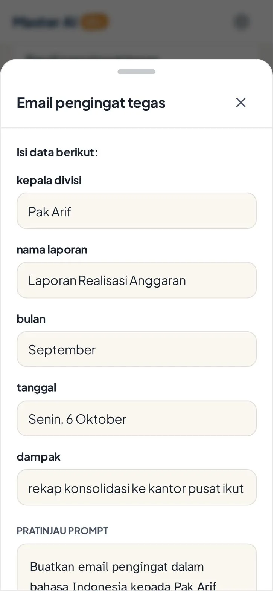
Kamus AI
105 istilah, masing-masing satu kalimat arti plus satu analogi kantor. Contoh: AI itu seperti staf baru yang sangat cepat dan banyak membaca, tapi tetap perlu diarahkan dan diperiksa pekerjaannya. Istilah yang sering muncul di rapat ditandai khusus. Yang penting buatmu bisa disimpan.
Rute 30 Hari dan Tinjauan Mingguan
Peta 30 hari dalam 4 minggu: AI untuk pekerjaan harian, dokumen dan visual, suara dan video, lalu otomatisasi dan kebiasaan. Hari 28 sampai 30 khusus jalurmu. Tiap akhir minggu ada tinjauan singkat: apa yang sudah jalan, apa yang perlu diulang. Hari yang bolong nggak menghapus progres.
Alat Jalurmu
Tujuh alat yang menyusun hasil dari isianmu sendiri:
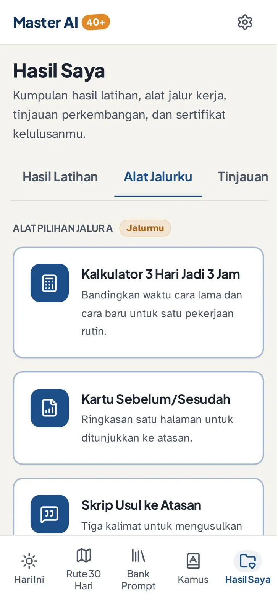
Hasil Saya dan Sertifikat
Semua hasil tugas tersimpan di satu tempat, bisa diberi bintang, bisa dibuka lagi kapan saja. Di akhir 30 hari ada Tinjauan 30 Hari dan sertifikat penyelesaian atas namamu sendiri, bisa diunduh.
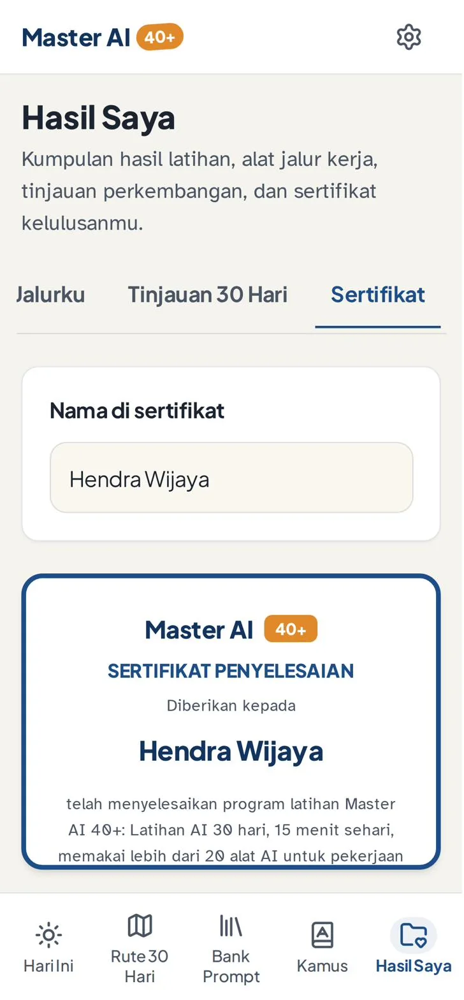
Info Pembaruan Tool
Tool AI berubah cepat. Di aplikasi ini, hari yang terdampak diberi lencana Diperbarui, langkahnya diperbarui, dan selalu ada tool cadangan gratis.
Ini alasan kenapa yang kamu beli adalah aplikasi, bukan file PDF yang isinya kedaluwarsa tiga bulan lagi.
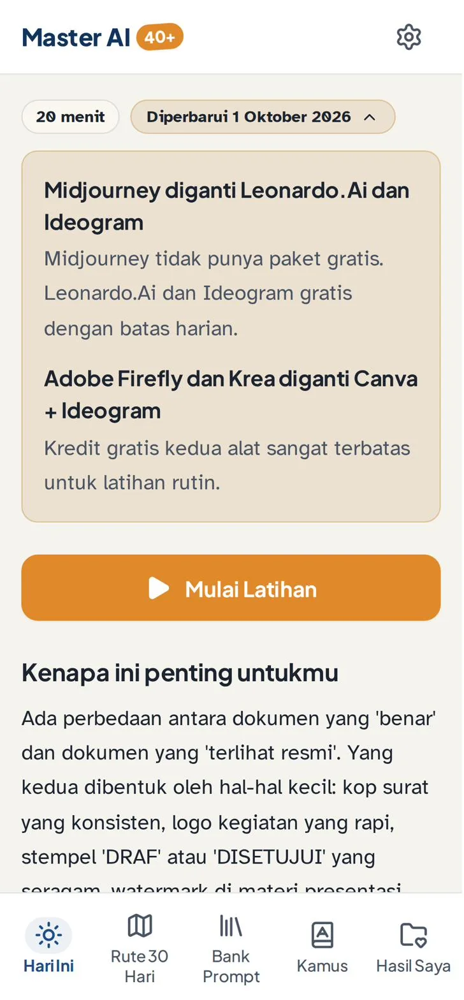
Hurufnya sudah lebih besar dari aplikasi pada umumnya sejak awal, dan masih bisa dibesarkan dua tingkat lagi dari Pengaturan.
Warna lebih tegas, garis lebih tebal, animasi dimatikan. Buat yang matanya cepat lelah di layar.
Tampilannya menyesuaikan. Hari yang lebih nyaman di laptop diberi penanda, tapi tetap ada cara untuk dikerjakan dari HP.
Mau ganti HP? Simpan cadangannya, lalu pulihkan di HP baru dengan kode yang sama.
menyusun rute belajarmu dari Tes Posisi, menuntunmu 30 hari satu langkah per layar, menyediakan prompt bahasa Indonesia yang tinggal dipakai, menyimpan hasil latihanmu jadi bukti, dan memberi tahu saat ada tool yang berubah.
chat AI, dan di dalamnya tidak ada AI. Dia pelatihnya. Tool AI yang kamu latih (ChatGPT, Gemini, Canva, dan lainnya) adalah layanan terpisah yang gratis, dibuka di tab lain. Aplikasi ini juga bukan mentor, tidak ada orang di belakangnya yang menjawab pertanyaan, bukan kursus bersertifikat resmi, dan tidak menjanjikan kamu diterima kerja atau berpenghasilan sekian. Yang dijanjikan adalah kemampuan yang terbentuk kalau kamu jalani 30 harinya.
| Tutorial YouTube | Kelas video atau Zoom | Minta diajari anak | Master AI 40+ | |
|---|---|---|---|---|
| Bahasa contoh prompt | Campur, banyak Inggris | Tergantung pengajar | Inggris, ngetiknya cepat | Indonesia semua, tinggal ganti kurung |
| Urutan belajar | Loncat-loncat, kamu susun sendiri | Ikut jadwal batch | Sekali tunjukin, selesai | 30 hari, satu tool sehari, disusun untukmu |
| Waktu per hari | Nggak terbatas, sering kebablasan | 1 sampai 2 jam per sesi | Tergantung mood dia | 15 menit |
| Sesuai bidang kerjamu | Tidak | Umum | Dia nggak tahu kerjaanmu | Ya, 7 bidang dipilih di awal |
| Kalau tool-nya berubah | Videonya tetap lama | Rekamannya tetap lama | Tanya lagi | Aplikasi yang kasih tahu, plus pengganti |
| Hasil latihan tersimpan | Tidak | Tidak | Tidak | Ya, jadi portofolio dan sertifikat |
| Cara bayar | Gratis, bayarnya waktu | Rp149.000 sampai 249.000, kadang per batch | Gratis, kalau dia lagi sabar | Rp127.000 sekali, selamanya |
Geser untuk melihat cerita lainnya. Nomor disensor untuk menjaga privasi.
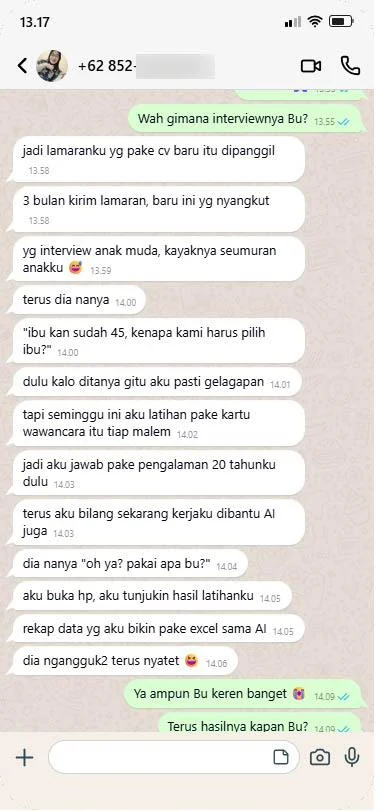
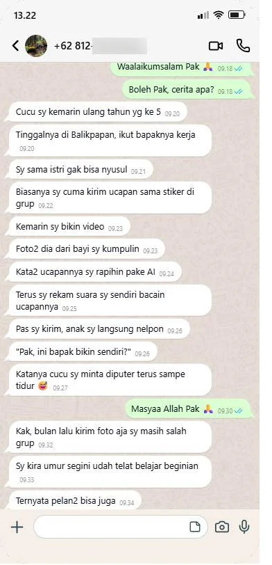
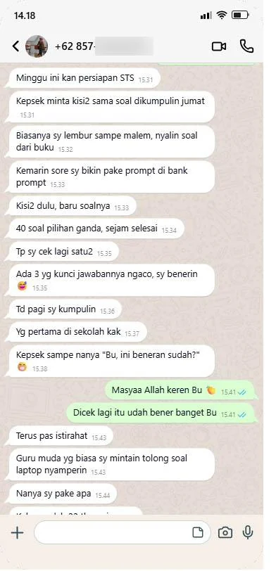
Rp127.000 untuk 30 hari latihan.Sekitar Rp4.300 per hari. Setelah itu nggak ada tagihan apa-apa, dan aplikasinya tetap kamu pakai untuk Bank Prompt, Kamus, dan Alat Jalur.
Panduan Akses berisi kode masuk dikirim ke email yang kamu pakai saat order.
Bisa pakai QRIS, transfer bank, atau e-wallet.
Begitu pembayaran terkonfirmasi, kamu diarahkan ke halaman sukses Master AI 40+, dan Panduan Akses berisi kode masuk dikirim ke email kamu. Kalau belum ada di kotak masuk, cek folder Spam atau Promosi.
Buka mai40.netlify.app, masukkan kode dari email, isi Tes Posisi sekitar 3 menit. Hari 1 bisa langsung dimulai malam ini.
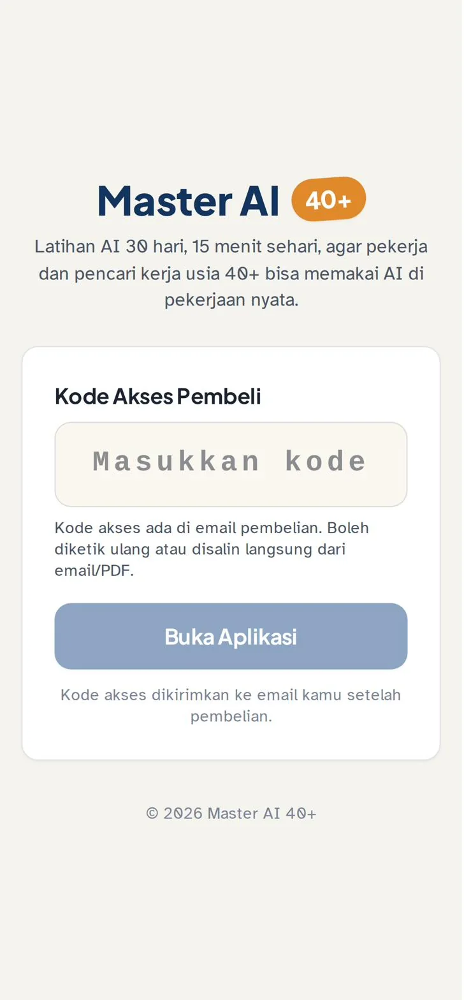
Kali ini kamu bisa diam seperti biasa. Atau kamu bisa buka HP, tunjukkan rekap yang kamu bikin semalam, dan bilang: “Saya sudah coba. Hasilnya begini.”
Dua puluh tahun pengalamanmu nggak hilang ke mana-mana. Yang kurang selama ini cuma alatnya, dan cara belajar yang pelan.
Hari pertamamu cuma 15 menit.
Sekali bayar. Tanpa langganan. Buka dari browser HP atau laptop, tanpa install.